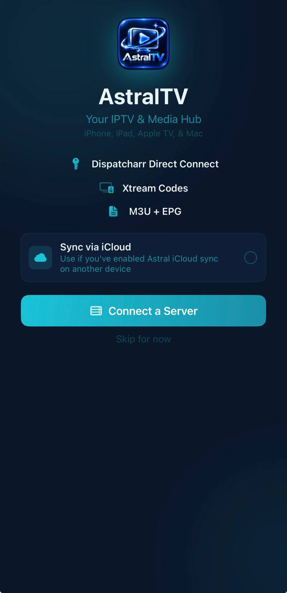
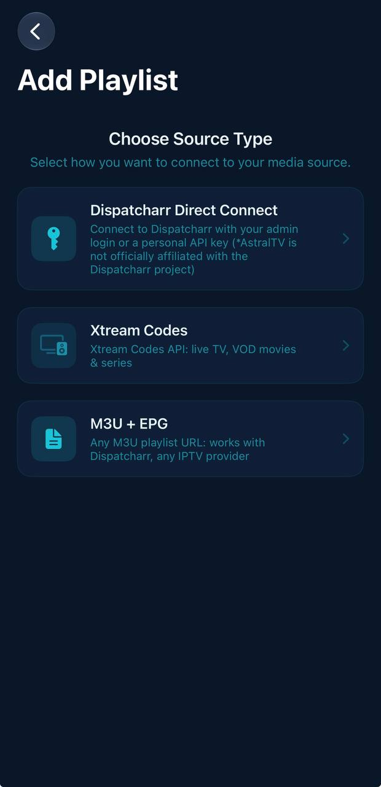
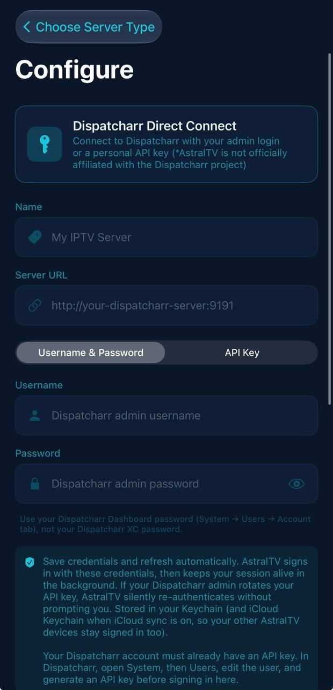
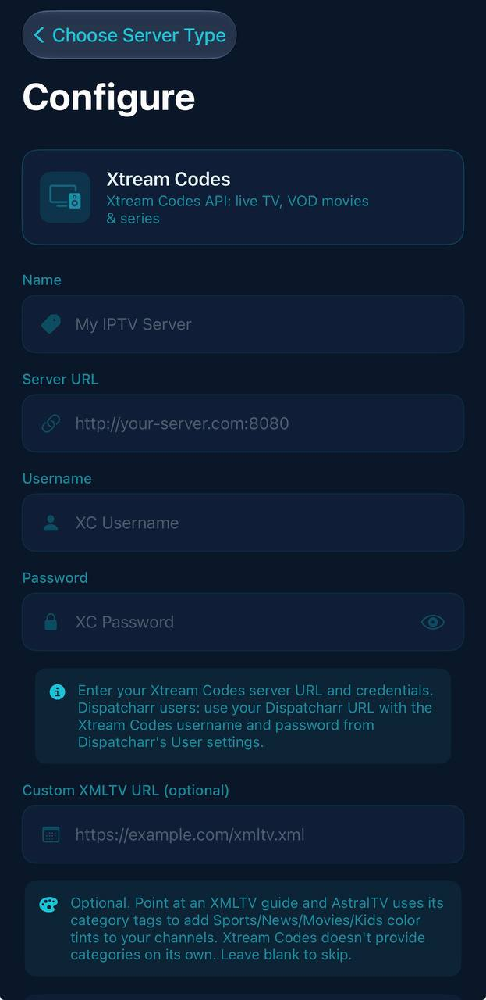
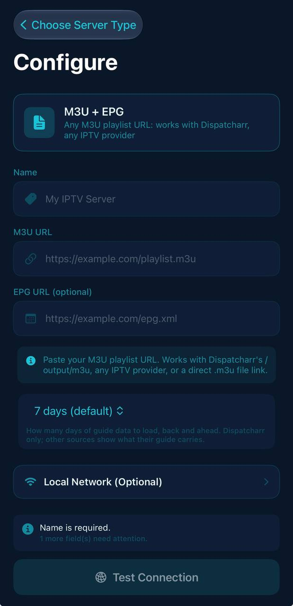

Live TV and a program guide
Browse channel groups while the current channel keeps playing. Open the guide to see what is on now and next, then jump straight to a program.
IPTV player for iPhone / iOS 18+ / GPL-3.0
AstralTV plays media sources you provide: Dispatcharr servers, Xtream Codes portals, and M3U playlists with XMLTV guide data. It does not provide any content or subscriptions.
Free software. You sign and install the app on the iPhone with Feather.

Connects to the media sources you already run
Features
Live TV through playback, in the order most people reach for them.
Browse channel groups while the current channel keeps playing. Open the guide to see what is on now and next, then jump straight to a program.
Schedule a recording from the guide or start one by hand. Everything lands in a single recordings view, ready to play back.
Detail pages, search, and resume keep your place across on-demand titles.
Watch a few channels side by side in multiview and rearrange the grid while it plays.
Send playback to another screen and keep the phone as the remote.
CarPlay puts playback controls on the car's screen, so the phone can stay in your pocket.
Playback runs on the mpv media engine, with subtitle support and HDR video.
Setup
AstralTV starts empty. Scroll through the whole flow, from first launch to a tested connection.




Connect a Dispatcharr server, an Xtream Codes portal, or an M3U playlist. If you enable iCloud sync, a setup made on one device carries over to the rest.
Each source type says what it needs up front. Dispatcharr connects with an admin login or a personal API key, Xtream Codes uses its API for live TV, VOD and series, and M3U works with any playlist URL.
Enter the server URL and sign in with your Dispatcharr admin login or an API key. Credentials are stored in the keychain and refresh in the background, so a rotated key does not sign you out.
Enter the server URL, username, and password. Dispatcharr users can point at their Dispatcharr URL and use the Xtream Codes credentials from its user settings. A custom XMLTV guide URL is optional.
Paste an M3U playlist URL and, optionally, an XMLTV guide URL. Pick how often the guide refreshes (7 days by default), then test the connection before you save.
Screens
Splash
Welcome
Add playlist
Dispatcharr
Xtream Codes
M3U + EPG
Drag or scroll sideways to see more.
Install
Everything below runs on the iPhone. Feather signs and installs the app, so it needs signing material first.
Checking the releases page…
DownloadAstralTV.ipa
Open the file with Feather on the iPhone to sign and install it.
Checking the build workflow…
Open latest buildGitHub keeps workflow artifacts behind sign-in. Open the build, then download AstralTV.ipa from its Artifacts section.
Pick one route. ArcticSign (third party, paid) sells a device certificate and its tutorial installs a Feather build with the certificate already set up, with no computer needed. Or use an Apple Developer account: on a Mac, export a .p12 certificate from Keychain Access and download a .mobileprovision profile, following the Feather account guide.
Only for the Apple Developer route. Get it from the official Feather releases and follow the Feather wiki for your iOS version.
In Safari on the iPhone, download AstralTV.ipa from the Releases page and open it with Feather.
Apple Developer route only. In Feather's signing settings, add the .p12 file, its password, and the .mobileprovision file.
Choose Sign & Install in Feather.
If iOS asks, open Settings > General > VPN & Device Management, select the profile, and trust it. Then open AstralTV.
If iOS asks for it, open Settings > Privacy & Security > Developer Mode and restart the phone.
Certificates from third-party sellers are not issued by Apple, and Apple can revoke them at any time. If a certificate is revoked, apps signed with it stop working. Keep your .p12 file and its password private.
Profiles from a free Apple ID expire after 7 days. Sign and install the app again with Feather when that happens.